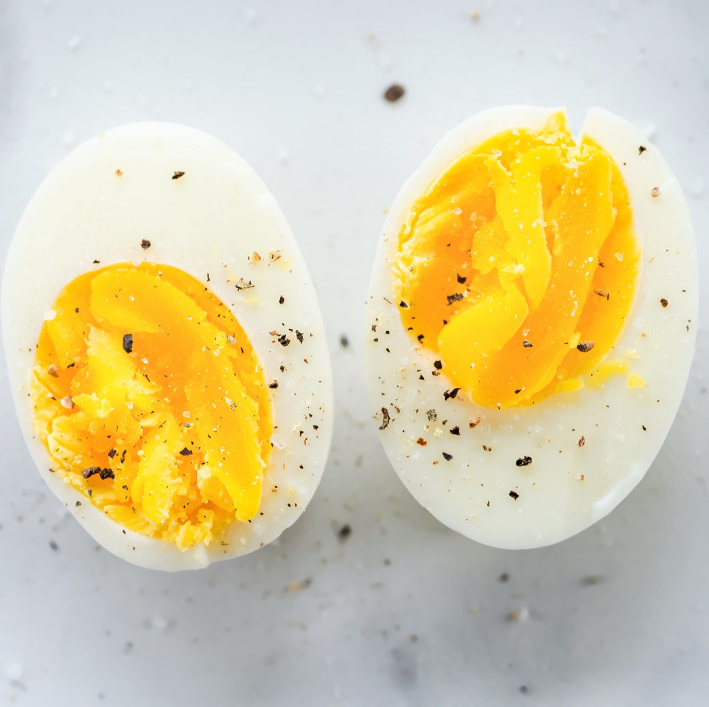

Boiled Egg

Literally how to boil an egg: The simplest of recipes. It's in the name.
Ingredients:
- Water
- Egg
- Salt (Only if you are a being fancy)
Directions:
- Add the eggs to a saucepan and cover with water:
Fill a saucepan about a quarter of the way with cold water. Place the eggs in a single layer at the bottom of the saucepan. Add more water so that the eggs
are covered by at least an inch or two of water. Sprinkle a pinch of salt for taste.
- Bring to a rolling boil:
Leave the pan uncovered. Turn the heat to high and bring the water to a rolling boil.
- Turn off the heat, cover, and let sit:
Depending on how cooked you like your hard boiled eggs, the eggs should be done perfectly after sitting for 10-12 minutes.
- Woo! You've done it, you genius!
Calories: 72 per egg
Source: Adulthood